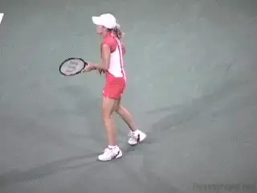
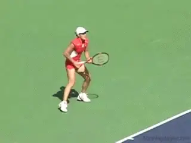
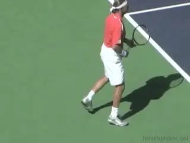
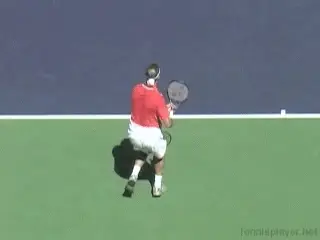

Previous: Return of Serve - Contact Moves Introduction | 🏠 Footwork Home | Next: Contact Moves: The Transfer
Contact Moves: The Front Foot Hop
Comprehensive unified tennis knowledge base — Fundamentals, Stroke Analysis, Reference Library, and more
Contact Moves: The Front Foot Hop
David Bailey

Front Foot Hop: an aggressive contact move when you come forward.
The Contact Move is a new concept I have developed that unites all the components of footwork. These components include the movement to the ball, the hitting stances, the athletic movement of the feet during the hit, the balance moves after the hit, and also, the recovery steps.
The Contact Move is a breakthrough concept because it allows us to make sense of the bewildering variety of complex movement patterns in high level tennis. Based on my study of pro tennis and the video resources of Tennisplayer, I've identified almost 20 different pro Contact Moves, covering every aspect of the game.
In these articles we are breaking the Contact Moves down into three categories. These are offensive, neutral, and defensive contact moves.

The player steps in, hits, kicks the leg back, and lands on the front foot.
We already looked at the first two aggressive contact moves, the Step Down (Click Here) and the Transfer (Click Here). Now in this article we'll look at the third aggressive contact move, what I call the Front Foot Hop. In future articles, I'll progress to the analysis of neutral and defensive contact moves as well.
The Hop Move
A Front Foot Hop is one variation in a larger category of hop moves. In general, a hop move is a contact move in which the ball is hit off one foot, with the other foot in the air. We will look at more hop moves when we address neutral and defensive footwork. But first let's see how to use the hop in aggressive, attacking footwork. This is the Front Foot Hop variation.

An aggressive on the rise groundstroke finishes the point with a Front Foot Hop.
The Front Foot Hop is aggressive because you are using your feet to attack the ball. I also like to call this "Do something!" footwork. You use the Front Foot Hop on opportunities balls when you have the chance to move forward into the court and either finish or attack the net.
The Front Foot Hop can be hit off both the forehand and backhand sides. It can be hit with either the one handed or two-handed backhand. It can also be used when players run around to hit forehands either inside out or inside in.
Using a Front Foot Hop, the player hits the ball with the weight on the front foot only and the rear foot off the court. As the player hits, he takes a hop forward and lands on the same foot, but in a spot forward from the take off point.

The Front Foot Hop is the natural transition footwork for attack.
As the player swings, he kicks his rear leg backwards and to the side, with the sole of the shoe pointing toward the sideline. This kick back helps the player extend through the swing. It also prevents him from opening up the torso too early and/or losing balance.
Three Options
When you get a short opportunity ball and execute a Front Foot Hope there are basically three things that can happen.
You can hit an aggressive on the rise ground stroke that ends the point with a winner or a forcing shot. But if you are unable to finish or hurt your opponent sufficiently, you can still recover and move back to the baseline. You can also hit the Front Foot Hop as a transition shot and follow it into the net.

Players use a variety of outsteps to position for the Front Foot Hop.
The Front Foot Hop is hit with a variety of outsteps, the steps you use to position to the ball. This depends on where you are in the court, and also, where the ball lands.
The simplest version is on a ball that lands near the center of the court. In this case the player steps out to his right or sometimes takes a small drop step. He then comes forward to the shot with shuffle steps. Another more advanced forward step pattern here is cross steps, where the back foot crosses in front of the front foot prior to the step into the neutral stance.
If the ball is wider, the player will use either a two step Rhythm Step pattern, or a three step pattern, what I call the Cha Cha Cha. With the Rhythm Step pattern, the player steps out with the outside foot, then takes a small sliding step across, and a second step with the outside foot. From this position, he can take the slide steps or cross steps forward to execute the Front Foot Hop.
The Cha Cha Cha also starts with a step out or a small drop step with the outside foot. This is followed by a step forward with the opposite foot, then a third step outward with the rear foot. Next come the shuffle steps or cross steps forward. We went over these 3 options in more detail in the first article on the Step Down (Click Here.)

Running around and hitting the Front Foot Hop on a Inside Ball.
The final pattern is when the player uses a Front Foot Hop on an inside ball. In this case the player runs around first, taking a reverse step behind with the outside foot. This is followed by a shuffle or a crossover which then leads to the execution of the Front Foot Hop.
In all cases, these outsteps are followed a step forward with the front foot into a neutral stance. It is important to note that this step with the front foot into the neutral hitting stance happens prior to the forward swing. The front foot stays on the ground on contact.

To recover the player pushes off the outside foot, then uses shuffle and/or crossover steps to move back to the center.
A Hop Not a Jump
When you hit a Front Foot Hop, you want to keep the angles in your legs through contact. You want to use the swing itself to impart spin rather than raising your entire body through the shot with the legs.
It is also very important to hit through the ball, and keep your legs flexed is a key to doing this. You definitely do not want to consciously jump up on contact or lift the head and look up too early.
This is why we call this contact move a hop, not a jump. The hop off the court is an explosive reaction to the forward swing with the knees bent and the weight on the front foot. It is not a mechanical attempt to launch into the air.
Recovery or Attack?
Often the Front foot Hop leads to a winning shot on a short ball. But when it does not, kicking the rear leg back positions it for use in the footwork that follows. This differs depending on whether you are moving into the net or recovering toward the baseline.
You may move forward and hit a shot but feel that you have not really hurt your opponent or hit the ball sufficiently well to follow it in the net. In this case you can recover to the baseline.

The Front Foot Hop, the split, then movement to the ball in any direction.
When the player chooses to recovery to the baseline, the outside foot comes around and lands on the court. The player then pushes backwards off this foot to begin the recovery. This can be followed by either a shuffle step or with a crossover step.
Continuing Forward
The Front Foot Hop is also the ideal transitioning step for moving forward to the net. In this case, after the hop the rear foot will come forward. The player lands on the rear foot, continues to move forward and then transitions into the split step. From this balanced ready position, he is ready to move either way to finish with a volley, or to move backward and finish with the overhead.
So, there we have it for the third aggressive contact move, the Front Foot Hop. Next, we'll move on the Neutral Contact Moves with some exotic names like The Back Foot Pivot, the Two Foot Pivot and the Spin Move. Stay Tuned.

David Bailey is a native Australian who has spent 15 years studying tennis at the professional level. He has developed a new language for one of the most complex and misunderstood aspects of the game, footwork and court movement. David has worked with world class players and coaches, national tennis associations and top academies, and has presented at coaching seminars around the world. His teaching system, the Bailey Method, has become a regular part of the coaching curriculum at the Nick Bollettierri Tennis Academy, where it is personally endorsed by Nick
Visit David’s Website! Click Here!
To Contact David directly Click Here!
Source: tennisplayer.net archive — Contact Moves - The Front Foot Hop.docx (John Yandell teaching library, 2002-2022). Extracted and rendered as HTML for Tennis Future Lab.